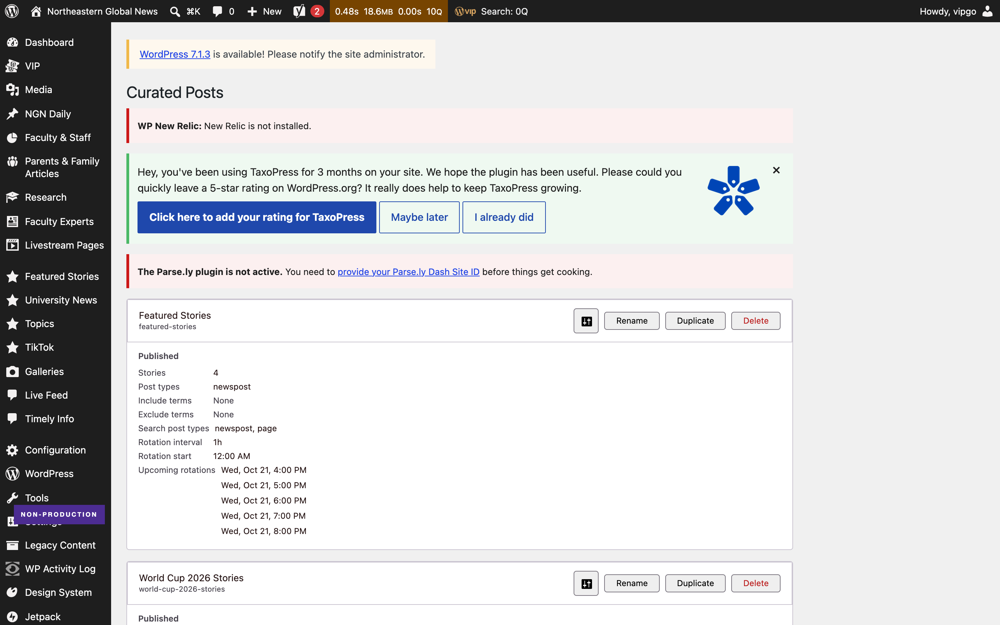
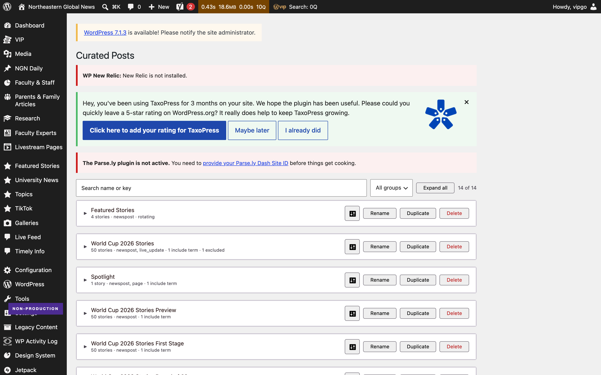
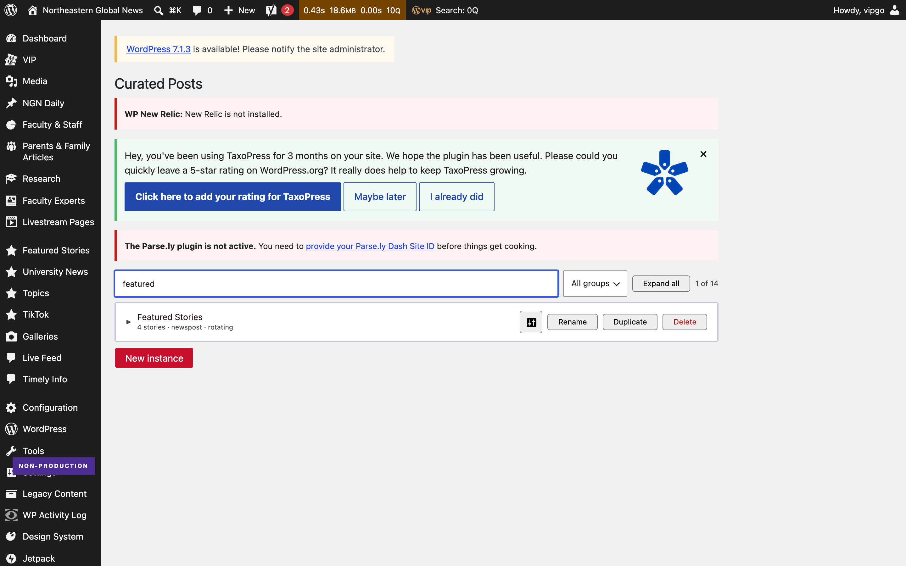
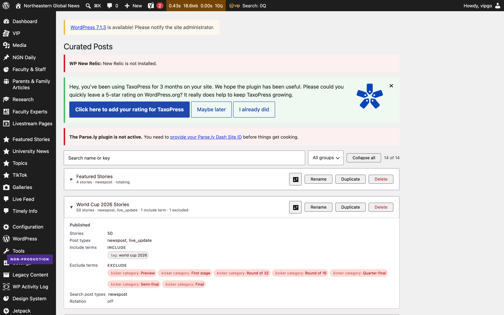
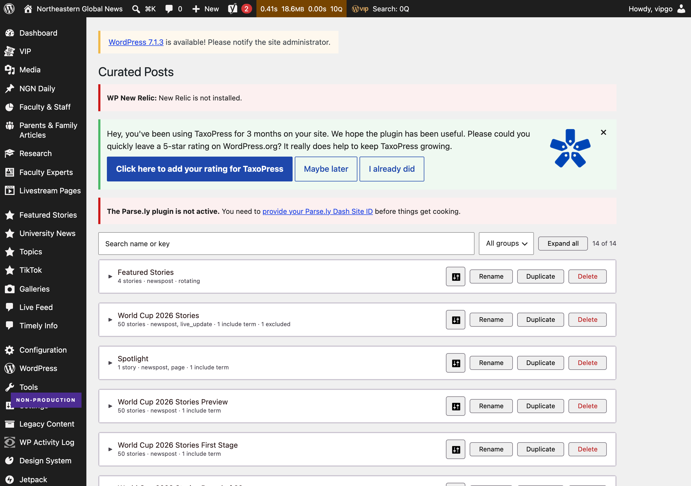
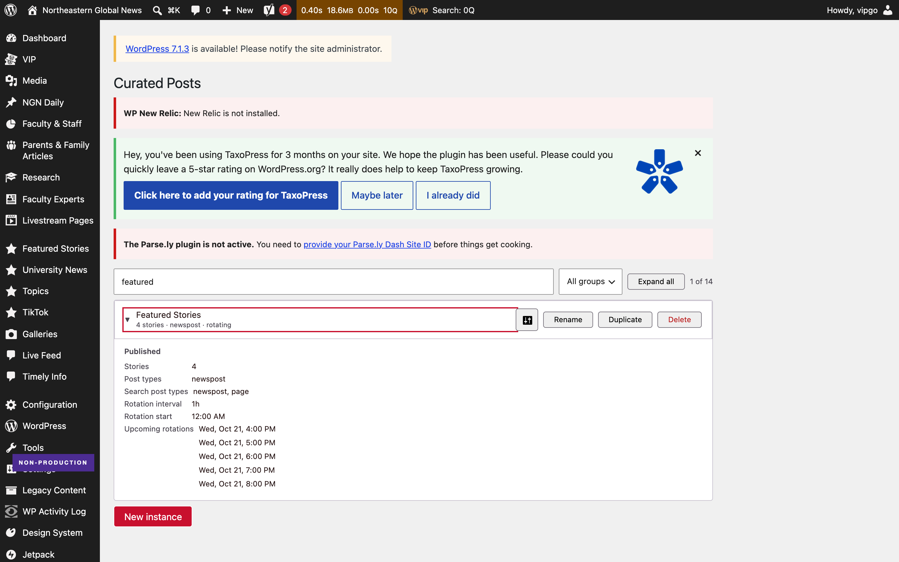

NUEAC-398 · shipped to PR #898
Captured with Playwright against the local VIP dev environment at 1440 x 900 on 21 October 2026. The local database holds 14 instances; production holds 47, so the saving on production is larger than what is shown here.



featured leaves one card. The count reads "1 of 14" and is
announced through aria-live.



| Check | Result |
|---|---|
| JavaScript unit tests | 1,275 passed |
| axe-core, WCAG 2.1 AA, three states | no violations |
| 1280 and 1440 | identical, no horizontal scroll |
| Keyboard only | reachable, focus visible, Enter works |
| Console errors | none |
| PHP tests | not run — no Composer autoload in this environment. The branch changes no PHP. |
Each was reproduced in the browser before it was fixed, and re-tested after. The
collapse-all button disagreed with the screen once a filter was applied; a new or
duplicated instance was hidden by an active filter; renaming collapsed the card
mid-edit; and a long label widened the row instead of truncating. Fixed in
01fc8ce9e.